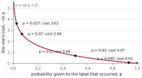
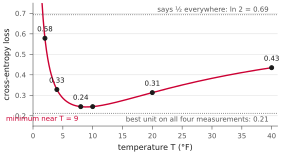

NJIT · CS 301 · INTRODUCTION TO DATA SCIENCE · FALL 2026 · UNIT I PDF
Meeting 4. Likelihood and Cross-Entropy Loss
Act 1 Likelihood · Act 2 The Cross-Entropy Loss
Meeting 2 asked whether a procedure could find the weights we had chosen by hand. Meeting 3 gave us a weather classifier that gets 707 of 6,865 days wrong. How should we compare it with another setting?
We need a single number that measures how well a setting predicts the labels, taking its confidence into account. We develop that measure through examples we can calculate by hand, then compare computed fits on the weather data.
Act 1. Likelihood
1.1 Why counting errors is not enough
We need to distinguish two quantities. The unit computes a score for each input: \(s = \mathbf{w} \cdot \mathbf{x} + b\). We also need a score for the unit, computed from the data to measure how well its predictions fit the labels. The first is one number per day; the second is one number per setting of \(\mathbf{w}\) and \(b\).
The obvious score is the one meeting 3 used: count the days the line puts on the wrong side, and prefer the line with fewer. For the hand line high \(+\) low \(= 120\) that count is 707 of 6,865, and it does not depend on the temperature, because dividing every score by \(T\) moves no day across the line. The count has two defects, and both matter.
It ignores the predicted probability. Suppose two models assign probabilities \(0.51\) and \(0.93\) to the warm half for November 6, 2024. Both misclassify this cold-half day at a \(0.5\) cutoff. Their probabilities for the observed label are \(0.49\) and \(0.07\), respectively. A measure based on these probabilities can distinguish the two predictions.
It is locally constant. Shift a line a little and, almost always, no day crosses to the other side — the days sit at scattered points, and a small move of the boundary steps over none of them. The count is therefore the same number for a whole neighbourhood of lines, and a score that cannot tell nearby candidates apart cannot guide a choice between them.
What is wanted instead is a score that reads the unit’s probabilities rather than only its verdicts, and can respond smoothly to small changes in the settings even when no predicted label changes.
1.2 What it means to explain the data
Meeting 3 read the unit’s output as its confidence that the label is 1. Another useful picture is to imagine a neuron that fires randomly with that probability. Our code still computes a probability; it does not actually make a random firing decision.
Take one row, with input \(\mathbf{x}_i\), label \(y_i\), and score \(s_i\). For now take \(T=1\), so the output is \(\sigma(s_i)\). Whenever an example specifies another temperature, use \(\sigma(s_i/T)\) in its place.
- If \(y_i = 1\), the neuron should fire. The probability the model assigns to that label is \(\sigma(s_i)\).
- If \(y_i = 0\), the neuron should stay silent. The probability the model assigns to that label is \(1 - \sigma(s_i)\).
Write \(p_i\) for the probability the model assigns to the observed label on row \(i\). This differs from the predicted class, which we get by thresholding the output at \(\tfrac12\).
Three days of the weather data, under the hand-drawn line high \(+\) low \(= 120\) with \(T = 10\). Temperatures and probabilities are rounded for display; calculations use the recorded values:
| day | high | low | label | \(p_i\) |
|---|---|---|---|---|
| July 10, 2024 | 93 | 79 | warm half | 0.995 |
| November 6, 2024 | 83 | 63 | cold half | 0.07 |
| May 9, 2020 | 50 | 34 | warm half | 0.027 |
A setting explains the data well when \(p_i\) is high on row after row. This setting explains the July day very well and the other two badly — which is the arithmetic form of what meeting 3 said about them.
1.3 One expression, both cases
The definition of \(p_i\) just given is a definition by cases: \(\sigma(s_i)\) in one circumstance, \(1 - \sigma(s_i)\) in the other. That is clear, and computers can handle it too. Writing the two cases as one expression is convenient for algebra and for calculations on arrays of rows.
Because \(y\) is binary, it can select between the two expressions. For any two numbers \(A\) and \(B\), consider
When \(y = 1\) this is \(1\cdot A + 0\cdot B = A\). When \(y = 0\) it is \(0\cdot A + 1\cdot B = B\). Exactly one term has coefficient \(1\); the other has coefficient \(0\).
Now take \(A = \sigma(s)\) and \(B = 1 - \sigma(s)\):
This is exactly the same rule, written without cases. Although it looks like an average, nothing is blended: \(y\) is either 0 or 1, so it selects exactly one of the two terms.
Example 1.1 The label as a switch
Check both branches on numbers.
A row whose label is \(1\), with \(\sigma(s) = 0.9\). The expression is \(1 \cdot 0.9 + (1 - 1)\cdot(1 - 0.9) = 0.9 + 0 \cdot 0.1 = 0.9\). The neuron should fire; the model assigned probability \(0.9\) to that observed outcome.
A row whose label is \(0\), with \(\sigma(s) = 0.3\). The expression is \(0 \cdot 0.3 + (1 - 0)\cdot(1 - 0.3) = 0 + 0.7 = 0.7\). The neuron should stay silent, and the model assigned probability \(0.7\) to that observed outcome. Notice that the unit’s own output, \(0.3\), is not the answer. On a row labelled 0 the unit is doing well when its output is small.
Later we will apply logarithms to these probabilities. If a probability rounds to 0 or 1 on a computer, an unused term can contain \(\log 0\). Multiplying that term by zero still gives an undefined floating-point operation: \(0\times(-\infty)\) evaluates to nan, “not a number.” The logarithmic formula therefore needs care; §2.8 explains how to compute it safely.
1.4 Likelihood
We combine the per-row probabilities to evaluate the full dataset.
Suppose the labels are independent given their inputs and the model’s fixed settings. Then the probability assigned to the complete set of observed labels is the product of the per-row probabilities. This is a simplifying modeling assumption; successive weather days can in fact be related. The product is called the likelihood:
Read it as the probability the model assigns to what happened, with the inputs held fixed. Higher is better, and it gives us one number for a whole setting.
Two consequences follow from its being a product, and they are the reason it behaves as a score should.
Small probabilities reduce the product. Assigning probability \(0.07\) to one observed label multiplies the likelihood by \(0.07\).
A zero probability makes the product zero. A row with \(p_i = 0\) sends the product to exactly \(0\). A threshold unit using our hand-drawn line answers only 0 or 1. If we interpret those answers as probabilities, it assigns each of its 707 misclassified days a probability of \(0\). Its likelihood on that data is exactly zero, and would remain zero if it were right about every other day in the record. This is what meeting 3 meant by saying that the sigmoid unit, wrong about the same November day, at least “gave 7% to what happened.”
Example 1.2 Likelihood by hand
The unit with \(w = (1, 1)\), \(\theta = 1.5\) and \(T = 1\), asked for AND. This is the first task of the meeting’s sheet.
The score is \(s = x_1 + x_2 - 1.5\), so the four rows give \(-1.5\), \(-0.5\), \(-0.5\) and \(0.5\). Applying the sigmoid: \(\sigma(-1.5) \approx 0.18\), \(\sigma(-0.5) \approx 0.38\), \(\sigma(0.5) \approx 0.62\).
Now the switch. The first three rows are labelled 0, so their \(p_i\) is \(1 - \sigma\); the last is labelled 1, so its \(p_i\) is \(\sigma\).
| \(x_1\) | \(x_2\) | AND | \(s\) | \(\sigma(s)\) | \(p_i\) |
|---|---|---|---|---|---|
| 0 | 0 | 0 | \(-1.5\) | 0.18 | 0.82 |
| 0 | 1 | 0 | \(-0.5\) | 0.38 | 0.62 |
| 1 | 0 | 0 | \(-0.5\) | 0.38 | 0.62 |
| 1 | 1 | 1 | \(0.5\) | 0.62 | 0.62 |
Using these rounded probabilities, the likelihood is \(0.82 \times 0.62 \times 0.62 \times 0.62 \approx 0.20\).
Now double the weights and the threshold, to \(w = (2,2)\) and \(\theta = 3\). The line is unchanged — \(2x_1 + 2x_2 = 3\) is the same set of points as \(x_1 + x_2 = 1.5\) — but the scores are twice as large: \(-3, -1, -1, 1\). The probabilities become \(0.95, 0.73, 0.73, 0.73\), and the likelihood rises to \(0.37\).
1.5 On AND, more confidence helps
Continue the doubling. Multiplying \(w\) and \(\theta\) by \(k\) leaves the boundary exactly where it was and multiplies every score by \(k>0\). Values in the table are rounded; even the displayed \(1.0000\) is slightly less than 1:
| \(k\) | \(p_i\) on the four rows | likelihood | |||
|---|---|---|---|---|---|
| 1 | 0.82 | 0.62 | 0.62 | 0.62 | 0.20 |
| 2 | 0.95 | 0.73 | 0.73 | 0.73 | 0.37 |
| 4 | 0.9975 | 0.88 | 0.88 | 0.88 | 0.68 |
| 8 | 1.0000 | 0.98 | 0.98 | 0.98 | 0.95 |
Every input lies strictly on the correct side of the line, so scaling the parameters increases the probability assigned to each observed label. The likelihood approaches \(1\) as \(k\) grows. Section 2.5 examines data with conflicting labels, for which this argument does not apply.
1.6 A product of 6,865 numbers
The likelihood has one practical defect, and it is severe. On the weather data it is a product of 6,865 numbers, each smaller than 1. For the hand-drawn line at \(T = 10\) its value is about \(10^{-730}\).
A double-precision floating-point number — the kind Python uses — has a smallest positive value of about \(5\times10^{-324}\) (including subnormal values). The likelihood of this perfectly ordinary setting is a real number that the machine silently rounds to zero. Two different settings, one much better than the other, would both be reported as zero, and the score would be useless exactly where it was needed.
Computing the log-likelihood avoids forming this very small product.
Act 2. The Cross-Entropy Loss
2.1 From a product to a sum
The logarithm turns products into sums: \(\log(ab) = \log a + \log b\), and so
This is the quantity called the log-likelihood. Two things make it a safe substitute for what it replaces.
It ranks settings identically. The logarithm is an increasing function, so if one setting has the larger likelihood it has the larger log-likelihood. Nothing about which setting is preferred can change.
And it is a number the computer can hold. Each \(\log p_i\) is a modest negative number, and their sum for the weather at \(T = 10\) is about \(-1{,}680\): unremarkable to store, where \(10^{-730}\) was impossible.
Throughout this course the logarithm is the natural logarithm, written \(\ln\) or \(\log\) interchangeably here. The choice matters only for the units, which §2.7 will name.
2.2 Mean negative log-likelihood
Two conventions convert the log-likelihood into the quantity actually used.
Flip the sign. The log-likelihood is negative, and larger is better; it is easier to work with a quantity that is positive, and where the goal is to make it small. Negating does that. The name for such a quantity is a loss.
Divide by the number of rows. A truth table has 4 rows and the weather has 6,865, so their totals depend strongly on dataset size. Averaging removes that direct dependence. It does not make different prediction tasks equally difficult.
Applying both to the log-likelihood, and substituting the switch form of \(p_i\) from §1.3, gives the cross-entropy loss:
The bracket uses the binary label to select a logarithm, as in §1.3. There, one of two probabilities was selected; here, one of two logarithms is. On a row with \(y_i = 1\) the bracket is \(\log \sigma(s_i)\), and on a row with \(y_i = 0\) it is \(\log(1 - \sigma(s_i))\) — in both cases \(\log p_i\), which is what the sum needs.
This step is safe for the same reason as before, and only for that reason: \(y\) is 0 or 1. It is not generally true that \(\log\big(yA + (1-y)B\big)\) equals \(y \log A + (1-y)\log B\); with, say, \(y = \tfrac12\) the left side is the logarithm of an average and the right side is an average of logarithms, and those differ. The identity holds here because \(y\) is binary. At \(y = 1\) both sides are \(\log A\); at \(y = 0\) both are \(\log B\); and there is no third case to check.
2.3 One row’s contribution
The mean loss averages the row contributions \(-\log p_i\). The graph below shows one such contribution as a function of \(p_i\).

The curve shows how a row’s loss depends on the probability assigned to its observed label.
- \(p = 0.995\) gives a loss of about \(0.01\).
- \(p = 0.93\) costs \(0.07\); \(p = 0.5\) costs \(0.69\).
- \(p = 0.07\) costs \(2.66\) — November 6, 2024 under the hand line.
- \(p \approx 0.0266\) costs \(3.63\) — May 9, 2020. The table in §1.2 rounded this probability to \(0.027\).
- And as \(p\) approaches 0, the cost grows without bound.
Because the sigmoid never quite reaches 0 or 1, each row has a finite cost for finite scores. A wrong answer given with confidence costs a finite amount, and the more confident it was, the more it costs. Assigning zero probability to an observed label gives infinite loss, regardless of the predictions on other rows. The loss increases as the probability assigned to the observed label decreases.
Example 2.1 Cross-entropy by hand
The two settings of Example 1.2, now scored by the loss. This is the second task of the meeting’s sheet.
For \(k = 1\) the probabilities were \(0.82, 0.62, 0.62, 0.62\). Their negative logarithms are \(0.20, 0.48, 0.48, 0.48\), and the loss is the average:
For \(k = 2\) the probabilities were \(0.95, 0.73, 0.73, 0.73\), so the rounded contributions are \(0.05, 0.32, 0.32, 0.32\), giving a loss of about \(1.01/4 \approx 0.25\). Doubling the weights reduced the loss without moving the line.
Two common errors affect this calculation. Dropping the minus sign gives a negative loss, which is impossible: every contribution is the negative logarithm of a number below 1, hence positive. Omitting the division by 4 gives the total loss, which scales with the number of rows.
2.4 Why the loss approaches zero on AND
Take the doubling further. The likelihoods of §1.5 correspond to these losses:
| \(k\) | 1 | 2 | 4 | 8 |
|---|---|---|---|---|
| likelihood | 0.20 | 0.37 | 0.68 | 0.95 |
| loss | 0.41 | 0.25 | 0.096 | 0.014 |
The loss approaches zero: since \(\sigma\) never attains 1, no \(p_i\) is ever exactly 1, no contribution is ever exactly 0, and the loss is never exactly zero. For every positive loss target, a sufficiently large \(k\) gives a loss below it.
What makes this possible is that all four AND inputs lie strictly on the correct side of the boundary. Increasing the scale makes every correct prediction more confident. Merely having a truth table is not enough: the unit must be able to separate its labels, with no input on the boundary. A real dataset with that property would also allow the loss to approach zero in this way.
2.5 Why conflicting labels prevent zero loss
Conflicting labels in the weather data prevent the same reduction toward zero.
There are 6,865 days and 1,878 distinct (high, low) pairs, so many days share an input with some other day. Of those pairs, 337 occur with both labels — the same high and the same low, once in the warm half of the year and once in the cold. Those pairs cover 1,881 days, more than a quarter of the data.
Take one of them. A high of 82° F with a low of 63° F occurs on 14 days: 12 in the warm half and 2 in the cold half. The unit sees the same two numbers on all 14 days, so it returns the same probability on all 14 days — it has nothing to distinguish them with. Call that probability \(q\). Then 12 days contribute \(-\ln q\) each and 2 days contribute \(-\ln(1 - q)\) each, and the average contribution over the 14 is
Choosing \(q\) to make this as small as possible gives \(q = 12/14 \approx 0.86\) — matching the observed fraction — and a minimum average loss of about \(0.41\) per day. Choosing any other \(q\) makes it worse, and choosing \(q\) close to 0 or 1 makes it far worse: the two cold days each contribute \(-\ln(1-q)\), which grows without bound as \(q\) approaches 1.
Thus any model using only high and low has positive loss on these conflicting groups. For comparison, here are losses computed on the full weather dataset:
| a unit that answers \(\tfrac12\) on every day | 0.693 |
| a poor line, high \(+\) low \(= 160\), \(T=10\) | 1.11 |
| the hand-drawn line at its best \(T\) | 0.243 |
| a fitted sigmoid unit on (high, low) | 0.217 |
| a fitted sigmoid unit on all four measurements | 0.212 |
The fitted losses near \(0.21\) are results for these sigmoid units, not a proven lower bound for every model. Conflicting (high, low) pairs establish a positive lower bound when those are the only features. They do not establish the same bound when humidity and pressure are also available, since those measurements may distinguish days with the same temperatures.
2.6 Temperature, seen by the loss
The loss also settles a question meeting 3 left open. There, the value \(T = 10\) was set by hand, with no reason given. We can now compare temperatures using their losses. Keeping the hand-drawn line fixed and changing only \(T\):

There is a minimum, near \(T = 9\). Sharpening the unit below that value makes it worse, and blurring it above that value makes it worse.
The reason is the competition absent from the AND example in §1.5. Lowering \(T\) makes outputs more extreme wherever the score is nonzero. This lowers the cost of correctly classified days and raises the cost of misclassified days. A day exactly on the boundary stays at probability \(\tfrac12\) and its cost is unchanged. The total falls while the first effect dominates and rises once the second does, The minimum occurs at the temperature that balances these effects. On our correctly separated AND table there is no second effect, so decreasing \(T\) keeps lowering the loss.
Consequently, multiplying the weights and the bias by \(k>0\) has the same effect as dividing \(T\) by \(k\), since both multiply every score by the same factor. We can therefore absorb a fixed temperature into the weights and bias: \(\mathbf{w}/T\) and \(b/T\) at temperature 1 give exactly the same probabilities.
2.7 Why it is called cross-entropy
The name cross-entropy comes from information theory. We can understand it by interpreting the loss as surprise.
Start with a single number: if something you believed had probability \(p\) happens, then \(-\log p\) measures how surprised you should be. If you were certain (\(p = 1\)) the surprise is 0. The less probability you gave it, the more surprised you are, without limit. That is precisely the contribution of §2.3 — so the cross-entropy loss is the average surprise of the unit, over the rows, at what actually happened. A model has low loss when it assigns high probabilities to the observed outcomes.
Now suppose outcomes occur according to some distribution \(p\) — outcome \(i\) happening a fraction \(p_i\) of the time. The average surprise of someone who believes \(p\) and sees the world do \(p\) is
and this quantity is the entropy of \(p\). It was defined by Claude Shannon in 1948, in the paper that created information theory, and it measures how uncertain the situation is in the first place: a coin that always lands heads has entropy 0: its next outcome has no uncertainty; a fair coin has the largest entropy two outcomes can have.
Entropy has a unit, and the logarithm chooses it. With logarithms base 2 the unit is the bit, and the entropy of a fair coin is exactly 1 bit — one yes-or-no question settles it. With natural logarithms, as here, the unit is called the nat, and the same fair coin has entropy \(\ln 2 \approx 0.693\) nats. That number should look familiar: it is the loss of a unit that answers \(\tfrac12\) on every day, from the table in §2.5. Such a unit uses no information from the measurements. Its loss is \(\ln 2\) whatever the labels are. That equals a fair coin’s entropy; it does not imply that the weather labels themselves are fair coin flips.
If outcomes follow distribution \(p\) and predictions use distribution \(q\), the expected surprise is
the cross-entropy of \(q\) relative to \(p\): the outcomes are weighted by how often they really happen, but the surprise of each is computed from what you believed. It is smallest when \(q = p\), and increases when the predicted distribution differs from the outcome distribution.
For each observed row, we represent the target as a distribution with all its weight on that row’s label. This is a way of encoding the observed answer, not a claim that the label was certain before we saw it. The unit’s distribution gives probability \(\sigma(s_i)\) to label 1 and \(1-\sigma(s_i)\) to label 0. Cross-entropy between this target and the unit’s distribution leaves just \(-\log p_i\). Averaging over the observed rows gives our loss \(L\).
We can also express the fitted results in bits. A unit that outputs \(\tfrac12\) everywhere has loss 1 bit per day. The fitted unit using four measurements has loss about \(0.212\) nats, or \(0.31\) bits, on this dataset. It has reduced the average cost by about two-thirds of a bit per day. That measures its improvement on these records, not all the information weather could possibly provide about the label.
C. E. Shannon, A Mathematical Theory of Communication, Bell System Technical Journal 27 (1948), 379–423 and 623–656. Shannon appears in this course twice: his 1937 master’s thesis, A Symbolic Analysis of Relay and Switching Circuits, showed that Boolean algebra can be used to analyze and design switching circuits. The principle of preferring the setting that makes the observed data most probable is called maximum likelihood; R. A. Fisher developed its theory in the 1920s.
2.8 Numerically stable loss computation
Written directly in NumPy, with temperature \(T\):
z = s / T p = sigmoid(z) loss = -np.mean(y * np.log(p) + (1 - y) * np.log(1 - p))
On the AND table this reproduces the \(0.41\) and \(0.25\) of Example 2.1, and on the weather with the hand line at \(T = 10\) it gives \(0.245\).
At \(T=1\), this direct calculation returns nan, although the true loss is about \(1.12\). For 804 days, the sigmoid rounds to exactly \(1.0\) in double precision. This starts at an argument of about 37: the mathematical value is below 1, but the calculation cannot preserve the small difference.
Then \(\log(1-p)\) becomes \(\log 0=-\infty\). On a warm-half row, \(1-y=0\), so the expression includes \(0\times(-\infty)\) and produces nan. On a cold-half row, that logarithm instead gives an infinite loss. These are numerical failures; for finite scores, the mathematical loss is finite.
A stable calculation uses the score directly. Writing \(z\) for the score divided by the temperature, a little algebra gives
so each contribution is \(\log(1 + e^{x})\) for a suitable \(x\). That function is computed safely as
where the exponent is nonpositive and cannot cause overflow. NumPy’s logaddexp function computes this safely. The whole loss becomes
row_loss = np.where(y == 1,
np.logaddexp(0, -z),
np.logaddexp(0, z))
loss = np.mean(row_loss)
which returns \(1.12\) at \(T = 1\) and agrees with the direct version everywhere the direct version works.
2.9 Review
A setting can now be evaluated by one loss: the average negative log-probability it assigns to the observed labels. This uses its confidence as well as its decisions, and responds smoothly to small parameter changes even when the number of classification errors stays fixed.
For our AND example, all inputs lie strictly on the correct side of the line, so increasing confidence drives the loss toward zero. For weather models using only high and low, identical inputs with different labels prevent zero loss. The fitted losses near \(0.21\) are useful comparisons, but are not a proven limit for every model or feature set.
We now have a way to compare candidate settings. The question of how a procedure should choose the next setting remains open.
Act 3. Practice
3.1 Probability of the observed label
Short calculation. A neuron outputs \(q=0.8\), where \(q\) is the probability of class \(1\). The observed label is \(0\). What probability did the model assign to the observed label, and what is its cross-entropy loss? You may use \(\ln 5\approx1.61\).
3.2 Accuracy and cross-entropy
Short explanation. Two classifiers make exactly the same predicted classes on a validation set. Must they have the same cross-entropy loss? Explain how their losses could differ substantially despite identical accuracy.
3.3 Working with log-likelihood
Mark all that apply. Why do we work with log-likelihood instead of directly multiplying many probabilities?
- Taking logarithms preserves the ranking of positive likelihoods.
- A logarithm converts a product into a sum.
- Taking logarithms removes the assumptions used to factor the likelihood into per-example probabilities.
- Summing logarithms avoids forming a product that may underflow.
3.4 Identical inputs with different labels
Application and explanation. Fourteen training examples have exactly the same input vector: twelve have label \(1\), and two have label \(0\). A deterministic model must assign them the same probability \(q\). Which choice minimizes their average cross-entropy: \(q=1/2\), \(q=12/14\), or \(q=1\)? Explain why perfect classification of these examples is impossible using the available inputs.